Interactive necklace: native owner picking and interior overlap · Machine-readable summary · Report
D=36.878px is a fixed independent visible-contour major-axis reference, ±6px, not the true largest bead. An orange vector connects the observed reflection (yellow ring) to its predicted centroid (white ring). Its Euclidean length is the positional error; it is not a bead-center error or an intensity error. Cyan lines are modeled visible boundaries. Uncertain orange photographic contours are evidence, not exact truth. Selection yellow does not denote bead color.
All physical identities are conditional. Missing reflections are counted separately, never assigned zero error. Boundary measurements exist only for16 uncertain digitized contours; other external bead boundaries remain unmeasured. All comparison data have historical exposure.
| Model | Reflection RMS px | RMS/D | Max px | Max/D | P95 px | P95/D | Boundary RMS px | Boundary max px | Ownership % | Paper % | Missing strong |
|---|---|---|---|---|---|---|---|---|---|---|---|
| primary | 8.963 | 0.243 | 22.635 | 0.614 | 14.088 | 0.382 | 6.124 | 16.378 | 61.950 | 4.536 | 0 |
| R309-reflection | 8.842 | 0.240 | 22.259 | 0.604 | 14.206 | 0.385 | 6.045 | 16.378 | 61.281 | 4.532 | 0 |
| R309-boundary | 9.060 | 0.246 | 17.803 | 0.483 | 14.251 | 0.386 | 5.069 | 13.002 | 60.229 | 6.795 | 0 |
| R309-ownership | 9.789 | 0.265 | 17.352 | 0.471 | 15.247 | 0.413 | 7.751 | 19.768 | 60.883 | 8.633 | 0 |
| R309-balanced | 8.963 | 0.243 | 22.635 | 0.614 | 14.088 | 0.382 | 6.124 | 16.378 | 61.950 | 4.536 | 0 |
| R309-global-control | 9.034 | 0.245 | 17.816 | 0.483 | 14.247 | 0.386 | 5.031 | 13.002 | 60.254 | 6.786 | 0 |
| R309-reflection-zeroheight | 8.841 | 0.240 | 22.266 | 0.604 | 14.343 | 0.389 | 6.047 | 16.378 | 61.289 | 4.532 | 0 |
| R309-balanced-zeroheight | 8.891 | 0.241 | 22.626 | 0.614 | 14.176 | 0.384 | 6.095 | 16.286 | 62.062 | 4.668 | 0 |
| R306-primary | 9.109 | 0.247 | 17.931 | 0.486 | 14.137 | 0.383 | 4.974 | 13.002 | 59.983 | 6.835 | 0 |
| R306-alternative-2665 | 8.866 | 0.240 | 22.242 | 0.603 | 13.979 | 0.379 | 6.040 | 16.378 | 61.177 | 4.523 | 0 |
| R306-alternative-1857 | 10.564 | 0.286 | 17.880 | 0.485 | 16.378 | 0.444 | 6.933 | 22.506 | 56.536 | 7.699 | 0 |
| R307-primary | 9.071 | 0.246 | 17.803 | 0.483 | 14.248 | 0.386 | 5.059 | 13.002 | 60.223 | 6.791 | 0 |
| R308-primary | 9.034 | 0.245 | 17.816 | 0.483 | 14.247 | 0.386 | 5.031 | 13.002 | 60.254 | 6.786 | 0 |
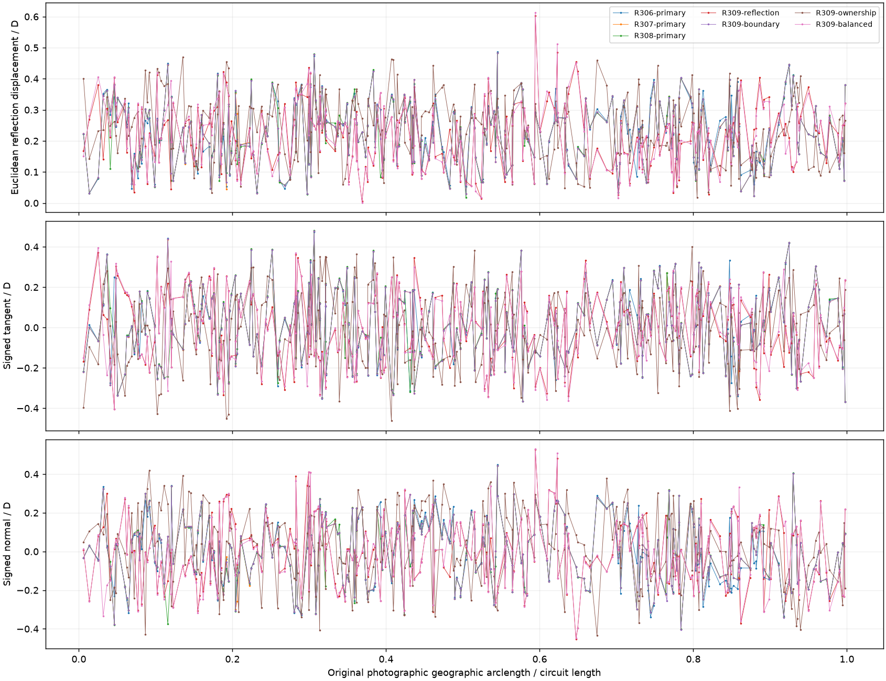
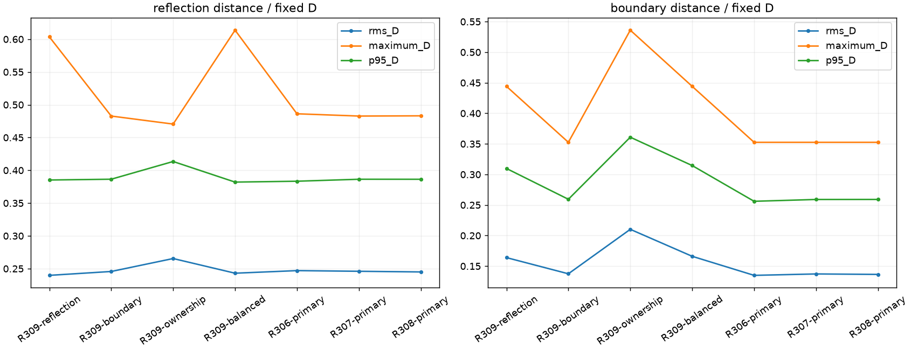
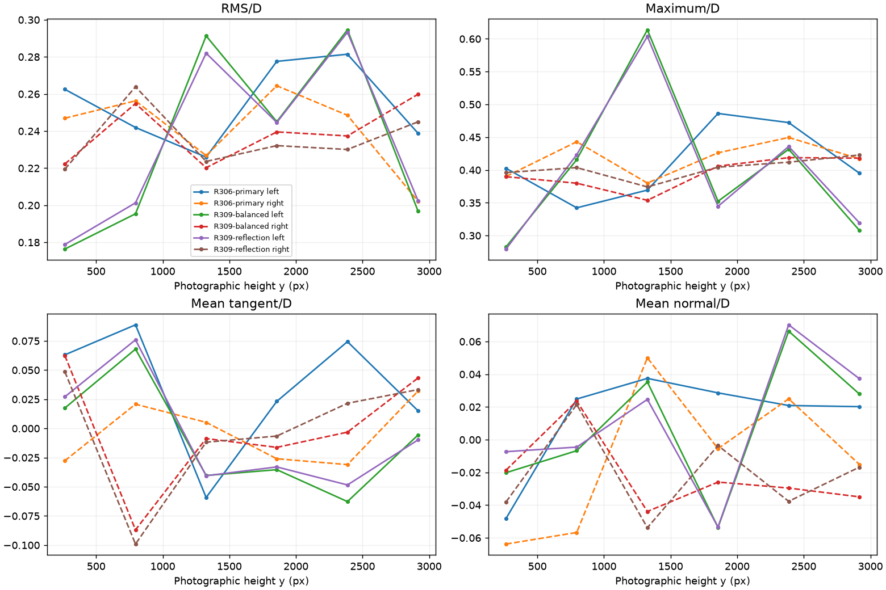
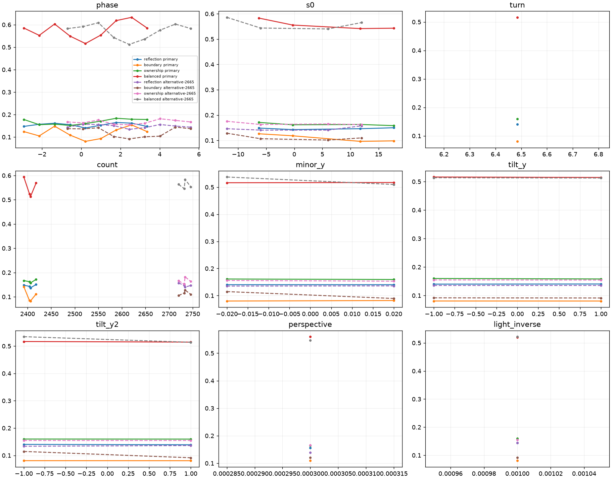
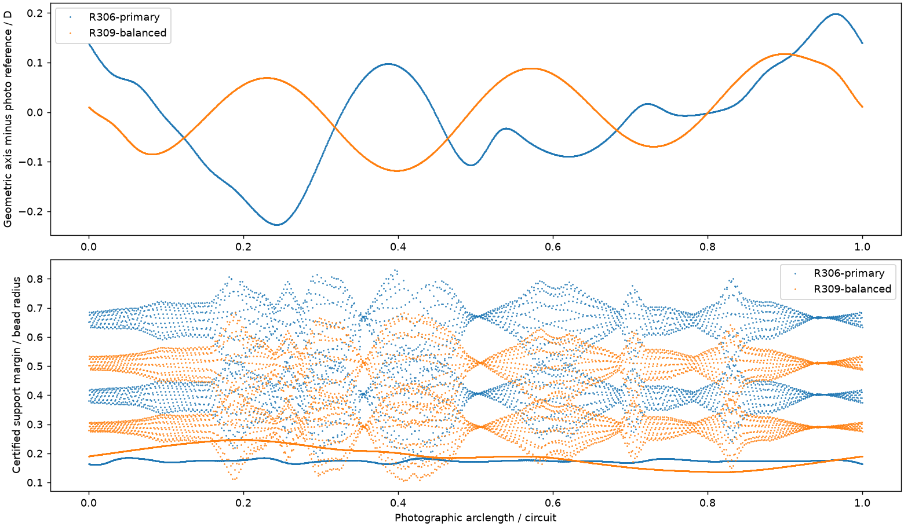
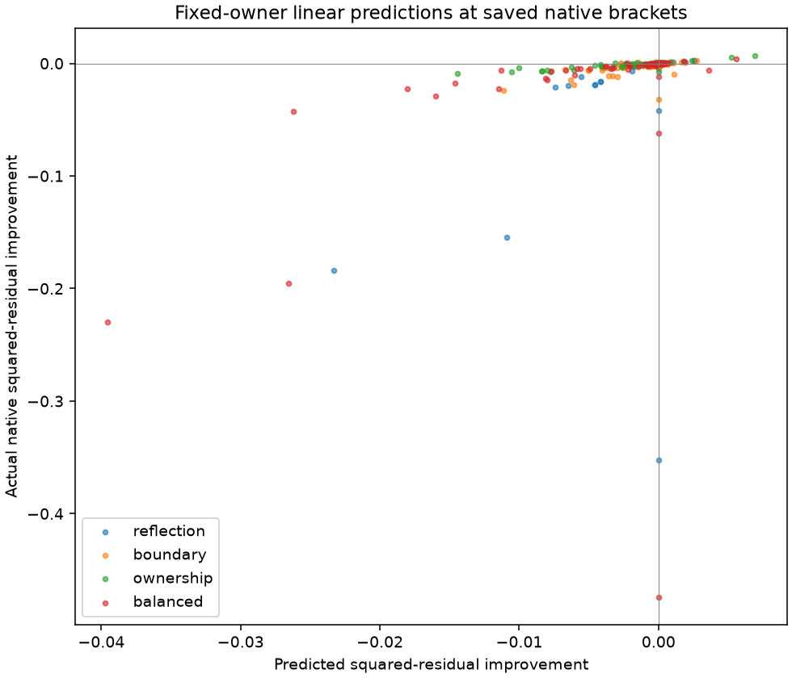
Required location · 50 bodies
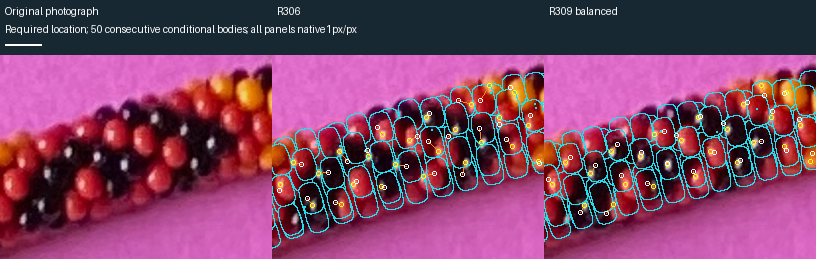
Good ownership · 50 bodies
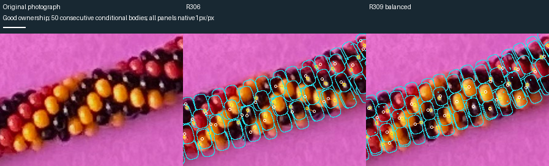
Typical ownership · 50 bodies
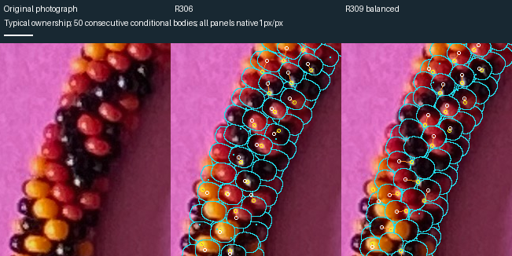
Poor ownership · 50 bodies
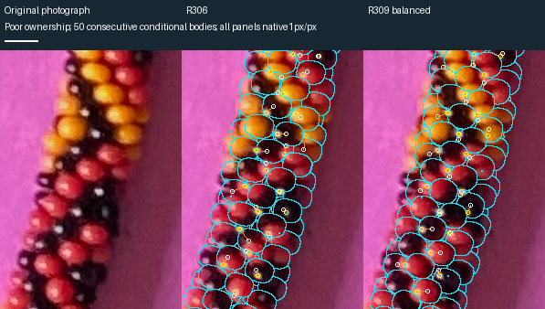
Largest ownership regression · 50 bodies
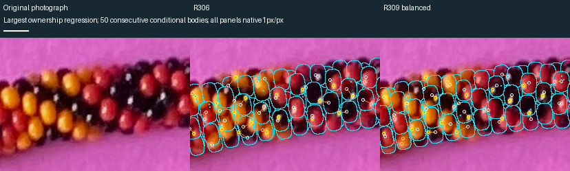
Right middle · 50 bodies
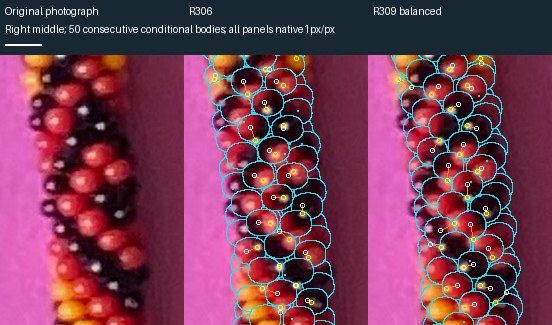
Bottom · 50 bodies
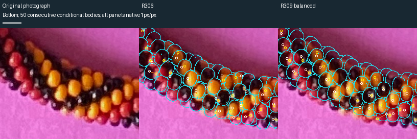
D reference upper left · 50 bodies
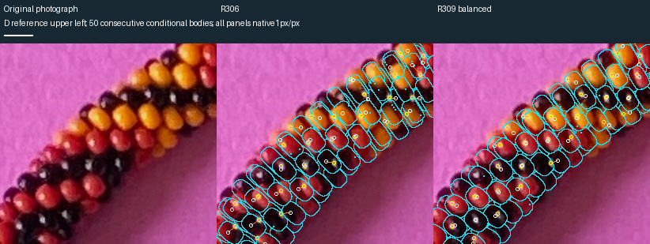